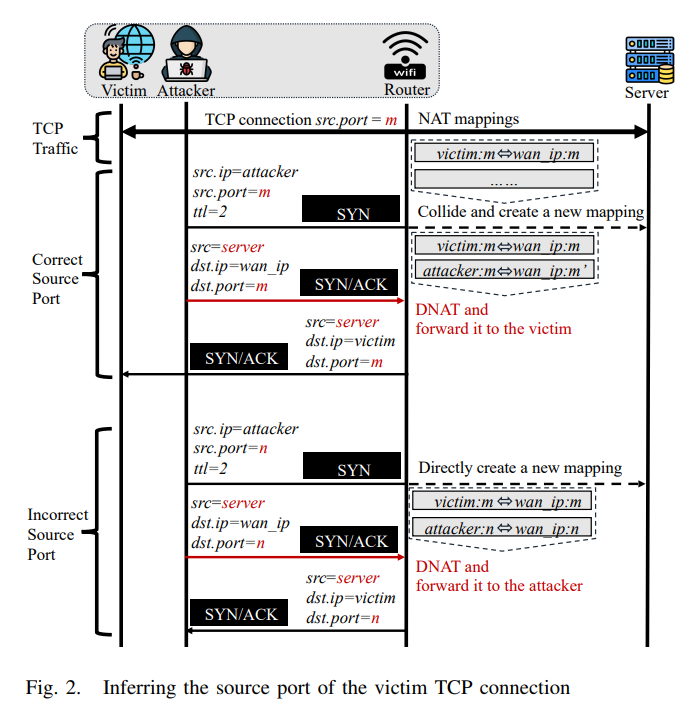

25.01.21 TCP Hijacking in NAT-Enabled Wi-Fi Networks
요약
- 개요
- NAT 활성화 되어 있는 wi-fi 네트워크에서 TCP 하이재킹: 시퀀스 번호 누출 공격
- wi-fi 라우터의 불충분한 역-경로 검증 취약점을 이용함
- 동일 네트워크에서 클라이언트와 외부 서버간 TCP 연결 여부를 off-path 공격자가 추론하고 하이재킹하는 방법
- 과정
- TCP 연결 탐지
- NAT 매핑 제거 및 재구성
- TCP 시퀀스 및 ACK 번호 획득 후 연결
- 결과
- TCP 서비스 거부 공격 ⇒ DoS
- 라우터 대신 공격자에게 패킷 전달자 역할을 맏기게 되어 TCP 하이재킹
- 스푸핑된 TCP RST 및 ACK 패킷 전달 과정에서 패킷 복원과 데이터 조작을 통한 TCP 트래픽 주입← 단 HTTPS를 통한 암호화를 하면 해당 과정이 까다로워짐(통계상 20%는 안함)
- 취약점 탐색 결과
- 67개 라우터 모델중 52개가 취약, 93개 wi-fi 네트워크 중 81%가 공격에 취약하다고 함
← 커피숍, 호텔, 서점, 기업의 wifi등을 찾아가 실제 해봤다고 함
서비스 탐지 시간 성공률 S노 17.5 s 87.4% FTP 19.4 s 8.6% HTTP 54.5 s 76.1% - 67개 라우터 모델중 52개가 취약, 93개 wi-fi 네트워크 중 81%가 공격에 취약하다고 함
- 결과
- 해당 취약점 관련 업체와 OpenWrt 커뮤니티에 보고함, 일부는 패치 진행 중이라 함
- 10개의 CVE 번호가 할당(CVE-2023-30305 to CVE-2023-30314)
- 해당 취약점 관련 업체와 OpenWrt 커뮤니티에 보고함, 일부는 패치 진행 중이라 함
Background
- NAT 및 포트 할당 전략(NAT and Port Allocation Strategies)
- NAT는 주소 부족 문제를 해결과 네트워크 토폴로지를 외부 엔터티로부터 숨기기 위해 개발된 기술임
NAT는 정확히 어떻게 이뤄지는거지?
- 유형
- Static NAT (고정 NAT):
- 하나의 내부 IP 주소를 특정한 하나의 공인 IP 주소에 매핑.
- 주로 서버나 고정된 연결이 필요한 장치에 사용.
- Dynamic NAT (동적 NAT):
- 여러 내부 IP 주소를 NAT 풀(pool)에 있는 공인 IP 주소 중 하나와 동적으로 매핑.
- 공인 IP 주소가 제한된 경우 사용.
- PAT (Port Address Translation, 포트 주소 변환):
- 여러 내부 IP 주소가 하나의 공인 IP 주소를 공유하며 포트를 기준으로 구분.
- NAT의 가장 일반적인 형태로, SOHO(Small Office/Home Office) 환경에서 주로 사용.
- Static NAT (고정 NAT):
- 작동 과정
- 내부 호스트의 패킷 전송 (Outbound)
- 내부 네트워크의 호스트가 외부 네트워크로 패킷을 보냄.
- 라우터는 패킷의 사설 IP 주소와 포트를 NAT 매핑 테이블에 기록.
- 라우터는 패킷의 소스 IP 주소와 포트를 공인 IP 주소와 새로운 포트 번호로 변환.
- 패킷 전송 (Outbound)
- 변환된 패킷이 외부 네트워크로 전송됨.
- 외부 네트워크에서는 패킷의 공인 IP 주소를 확인하여 응답을 보냄.
- 외부에서의 응답 패킷 (Inbound)
- 외부 네트워크에서 응답 패킷을 라우터로 보냄.
- 라우터는 NAT 매핑 테이블을 참조하여 공인 IP 주소와 포트 번호를 기반으로 원래의 사설 IP 주소와 포트 번호를 찾음.
- 패킷의 대상 IP 주소와 포트를 변환하여 내부 호스트로 전달.
- 내부 호스트의 패킷 전송 (Outbound)
- NAT 매핑 테이블 정보
- 내부 IP 주소와 포트.
- 외부(공인) IP 주소와 포트.
- 대상 IP 주소와 포트.
- 프로토콜 (TCP/UDP).
- 타임아웃 정보 (연결 유지를 위한 시간 설정).
- 예시
- 내부 호스트(192.168.1.2)가 웹 서버(8.8.8.8)에 접속 요청을 보냄 (포트 1234 사용).
- NAT 라우터가 내부 IP(192.168.1.2:1234)를 공인 IP(203.0.113.5:443)로 변환.
- 웹 서버는 203.0.113.5:443 으로 응답을 전송.
- NAT 라우터가 응답을 192.168.1.2:1234로 변환하여 내부 호스트로 전달.
- 유형
- TCP 매핑에 대한 NAT 동작 과정
- 내부 호스트가 외부 서버와의 연결을 시작시 라우터는 이를 테이블에 새 매핑으로 생성
⇒ 바인딩 과정이라 함
- 이때 SYN 패킷 뿐만 아니라 PUSH와 ACK 플래그 패킷에서도 새 NAT 매핑을 유발 할 수 있음을 발견함
- 매핑은 변환 전후의 소스 IP 주소 및 포트, 대상 IP 주소 및 포트, 프로토콜, 세션 상태 및 매핑 타임아웃과 같은 정보를 기록
- 외부 서버에서 응답이 도착하면 매핑 정보에 따라 패킷을 내부 호스트로 전달, 상태를 업데이트 함
- 내부 호스트가 외부 서버와의 연결을 시작시 라우터는 이를 테이블에 새 매핑으로 생성
NAT 내부 서버 포트 매칭 방법
- 포트 보존 (Port Preservation)
- 가능한 경우 원 소스 포트 유지, 충돌시 랜덤 포트 선택
- 랜덤 선택 (Random Selection)
- 가능한 포트 풀에서 무작위 포트 사용
- 순차 선택 (Sequential Selection)
- 초기 연결에 랜덤 포트 할당, 이후 연결에서 순차적으로 포트 할당
- 포트 과부하 (Port Overloading)
- NAT 장치가 원 포트를 유지하려고 시도
- 충돌 발생시 기존 연결 삭제(기존 사용자연결 끊김) 후 최신 연결만 유지
- 포트 보존 (Port Preservation)
NAT 매핑 관리 및 타임 아웃
- 매핑 타임 아웃
- 비활성 NAT 매핑은 설정된 타임아웃 이후 제거
- RFC 5382 권장 타임아웃
- ESTABLISHED 상태: 최소 2시간 4분
- CLOSE 상태: 1초 or 10초(RST 패킷으로 전환될 경우)
- 연결 상태 추적
- NAT는 TCP 연결 상태를 기반으로 매핑 상태를 업데이트함
- 상태 변화에 따라 적절한 타임아수을 적용
- 매핑 타임 아웃
- 라우터의 TCP 윈도우 추적(TCP Window Tracking in Routers)
- 클라이언트와 서버 간의 중간 장치로서 라우터는 관련 호스트의 연결 정보를 기록하여 이후 패킷 전달에 사용해야 함
- 그러나 TCP는 처음부터 종단간 통신을 위해 설계 되었으며 중간 장치를 고려하지 않음
→ 성능 문제로 인해 모든 정보 기록 하지 않음
→ 라우터는 연결된 TCP 윈도우를 추적하지 않기로 선택 가능하며, TCP패킷의 시퀀스번호와 확인 번호를 엄격히 확인하지 않음
- 라우터 오픈소스 운영체제인 OpenWrt 및 AsusWrt는 CPU 오버헤드를 줄이기 위해 관련 옵션 제공
- OpenWrt :
nf_conntrack_tcp_no_window_check- 패킷의 시퀀스 번호를 전혀 확인하지 않음
- AsusWrt :
ip_conntrack_tcp_be_liberal- 현재 시퀸스 번호에서 2G 공간을 벗어나는지에 대한 여부만 확인함
- 위 옵션들은 기본적으로 활성화 되어 있으며, 이때 Netfilter는 원래 Linux 커널과 달리 윈도우 추적을 수행하지 않음(일반적인 Linux 커널에서는 윈도우 추적함→ 시퀀스 번호를 엄격히 검증)
TCP 시퀀스 번호란?
- 데이터 전송의 순서와 무결성을 보장하기 위해 시퀀스 번호를 사용
- 송신자가 데이터를 전송할 때 시퀀스 번호를 포함하며, 수신자는 이를 확인하여 데이터의 순서를 보장
- 본래 라우터는 패킷 전달말 하기에 시퀀스 번호 검증은 안함
- 단, 방화벽(Netfilter)같은 보안기능 활성화시 시퀀스 번호 검증하여 비정상 패킷을 차단함
- 이는 CPU 오버헤드를 증가시킴
- 시장의 대부분의 라우터도 성능상의 문제로 인해 TCP 윈도우 추적 전략을 off해 놓음
- OpenWrt :
- 해당 논문에서는 OpenWrt 기반 라우터 및 유사 설정을 가진 라우터를 목표로 잡음
- OpenWrt 기반인 경우
→ 공격자는 임의의 시퀀스 번호를 가진 하나의 위조 RST 패킷을 사용하여 매핑을 정리 가능
- AsusWrt 기반인 경우
→ 2G 간격의 두 시퀀스 번호를 가진 두 개의 RST 패킷을 위조하여 범위 검사를 우회 가능
- 역경로 검증(Reverse Path Validation)
- IP 스푸핑 공격을 방지하고 소스 기반 주소 검증 프로세스를 위해 RFC 2827 및 RFC 3704는 역경로 검증 개념을 제안했음
- 수신된 패킷의 소스 IP 주소가 수신된 인터페이스를 통해 라우팅 테이블에 따라 다시 라우팅될 수 있는지 확인하여 패킷의 진위를 검증
- 해당 전략이 활성화 된 경우 패킷이 수신 인터페이스에서 역경로로 라우팅 될 수 있을 때만 커널에 의해 처리되고 목적지로 라우팅 되며 그렇지 않은 경우 드롭됨
대부분의 Linux 기반 시스템은
rp_filter이라는 커널 변수를 통해 해당 전략 제어함- 0 : 소스기반 주소 검증이 비활성화
- 1 (Strict Mode) :
- RFC 3704에 정의된 엄격 모드
- 장치는 들어오는 패킷의 소스 주소를 포워딩 정보 베이스(FIB)와 비교
- 만약 들어오는 인터페이스가 최적의 역경로가 아니면 패킷이 드롭
- 2 (Loose Mode) :
- RFC 3704에 정의된 느슨한 모드
- 들어오는 패킷의 소스 주소를 FIB와 비교
- 패킷이 어떤 인터페이스를 통해서도 도달할 수 없다면 드롭
- VPN 환경에서 라우터의 역경로 검증이 없을 경우 공격자가 네트워크 연결을 하이재킹하거나 비활성화 할 수 있음
- 대부분의 라우터가 권장 사항을 준수하지 않으며, NAT 매핑에서 연결과 일치하는 스푸핑된 소스 주소를 가진 패킷을 드롭하지 않고 모든 인터페이스에서 이를 수락한다는 것을 발견다함 ⇒ 즉 앞으로의 논문은 RFC 3704에 정의된 준수사항을 어기는 환경을 가정하는것임
- 해당 논문은 off-path 공격자가 역경로 검증 없이 스푸핑된 SYN/ACK 패킷을 보낼 수 있음을 검증하는것
Threat Model
- 공격 조건
- AP isoaltion 상태가 꺼져야함
- Nmap과 MacStealer 내부 네트워크스캔 가능
- RFC 3704와 동일하게 스푸핑 방지의 역할을 함
- off ⇒ TCP DoS 및 TCP 하이재킹 공격 가능
- on ⇒ TCP 주입(TCP injection) 공격은 방해받으나 DoS와 TCP 하이재킹은 가능
- 라우터가 포트 보존 전략이 설정되야함
- 대부분의 라우터가 해당 전략 채택함(Huawei나 pfSense 오픈소스 펌웨어 제외)
- 라우터는 역경로 검증이 비활성화 되어야함
→ 조사한 30개중 24개가 비활성화 되어 있음
- TCP 윈도우 추적 전략 비활성화
→ Cisco Meraki를 제외한 대부분의 라우터 비활성화 함
- 피해 클라이언트는 서버와 자주 통신하지 않음
- NAT 매핑의 상태는 해당 TCP RST 패킷을 수신한 후 설정된 상태에서 종료 상태로 전환됨
- 이때 매핑 타임아웃(1~10s) 후에 완전히 제거됨
- 해당 기간동안 클라이언트의 통신이 계속 되면 매핑이 새로 고침되므로 공격에 방해됨
- 평균적으로 TCP 연결이 오래 지속되며 데이터 통신이 수분에 한번 일어났으며 테스트한 라우터의 42%의 라우터가 1초의 타임아웃을 가지고 있었음
→ 공격자는 공격하기 적절한 시간을 가질 수 있었음
- AP isoaltion 상태가 꺼져야함
- 라우터의 외부 IP 주소 탐색
RECORD_ROUTE를 통한 traceroute와 ping
- 웹 브라우저를 통해 IP를 스캔하고 액세스
Attack Procedure
- 공격 과정 요약
- 네트워크 탐색: 라우터 외부 IP 주소 확인, AP 격리상태 식별을 통해 잠재적인 피해 클라이언트 탐색
- 활성화된 연결에 대한 추론: LAN에서 서버로의 활성화된 연결이 있는지 탐색
- 활성 연결에 대한 추론: 라우터에서 NAT 매핑 제거, 새로운 매핑 생성 후 서버에서 수신한 응답 패킷의 시퀀스 번호와 확인 번호 하이재킹
- 위 단계 수행시 공격자는 DoS, TCP Hijaking, TCP Injection 가능
- 네트워크 탐색
- AP 격리 상태 확인
- Nmap과 MacStealer를 통해 네트워크 스캔, AP 격리 상태 확인
- 비활성 된 경우 공격자는 잠재적인 피해 클라이언트 기록
- 여태까지 연구된 방법과 달리 클라이언트의 정확한 사설 IP주소를 알 필요가 없음
⇒ 라우터의 NAT 매핑 테이블을 조작하는 것이기 때문
피해자가 기존에 통신하던 목적지에 가는 패킷으로 위조할려면 내부망인 wi-fi에서 외부로 나가는 router에서 NAT를 통해 인터넷과 연결됨 이때 포트 번호를 통해
- 라우터 외부 IP 주소 탐색
- 공격자가 Tracerout를 사용하여 외부 호스트 까지의 경로에 있는 게이트 웨이 식별
record route 옵션을 통해 두번째 게이트웨이에 ping 실행, 경로를 기록
⇒ 지나간 모든 인터페이스의 IP 주소 확인 가능
- 게이트웨이에 ping을 사용해도 경로가 반환되지 않는 경우
게이트웨이 서브넷을 스캔, 활성 호스트의 IP 주소를 식별 가능
라우터의 외부 IP에 접근하면 라우터 설정 페이지(Web GUI)가 표시되므로 위 방법들로 확인 가능
- 공격자가 Tracerout를 사용하여 외부 호스트 까지의 경로에 있는 게이트 웨이 식별
- AP 격리 상태 확인
- 활성화된 연결에 대한 추론
 - 희생자의 포트번호는 m, 공격자가 추측한 포트번호를 n으로 가정
- n ≠ m일 시
- SYN 패킷 전송
- 공격자IP:n 으로 SYN 패킷 전송
- 라우터는 새로운 포트번호를 받아 새로운 NAT 매핑을 생성하게 됨
⇒ 공격자IP:n ↔ 라우터_외부IP:n 의 형태로 new 매핑 정보 저장됨
- 위조된 SYN/ACK 패킷 전송
- 서버를 가장하여 SYN/ACK 패킷 위조하여 목적 포트 n으로 패킷을 라우터에게 보냄
- 라우터는 패킷의 포트n을 참조하여 NAT 매핑 확인
- 공격자의 IP로 연결
- 공격자가 위조 SYN/ACK 패킷 수신
- 따라서 공격자는 위조된 SYN/ACK 패킷을 수신하게 됨
- SYN 패킷 전송
- n =m 일 시
- SYN 패킷 전송
- 공격자IP:n 으로 SYN 패킷 전송
- 피해자가 이미 m을 사용중임
⇒ NAT 매핑 충돌이 발생 라우터는 NAT테이블에 “공격자IP:m’”으로 저장함
- 위조된 SYN/ACK 패킷 전송
- 서버를 가장하여 SYN/ACK 패킷 위조하여 목적 포트 n으로 패킷을 라우터에게 보냄
- 라우터는 패킷의 포트n을 참조하여 NAT 매핑 확인
- 희생자의 IP로 연결됨
- 공격자가 위조 SYN/ACK 패킷을 수신하지 못함
- 위조 패킷은 희생자에게 넘어가게되며 따라서 공격자는 위조 패킷을 수신할 수 없음
- m’이 뭔지는 상관이 없음. 왜냐하면 결국에 공격자한테 패킷이 안 올때까지 보내면 되니까. 다음 위조패킷 p를 보낸다 할 때 만약 m’과 곂치게 되면 결국에 공격자에게 위조 패킷이 오게 됨 따라서 그냥 계속 돌려보면 됨
- SYN 패킷 전송
- 공격자는 자신의 IP로 추측한 포트 번호 n을 사용하여 서버로 SYN 패킷을 보냄
{kind=link}
- 활성화된 TCP 연결에 대한 하이재킹

- 목표
- 서버의 현재 시퀀스 번호와 인증 번호 획득 시도
- TCP는 양방향 대칭(full-duplex) 프로토콜이기 때문에 피해자 클라이언트의 시퀀스 번호와 ACK 번호는 서버의 값과 대칭적으로 대응됨
- 기존 연구와의 차이점
- 기존 연구에서는 4GB의 전체 시퀀스 번호 공간을 탐색하며 부채널(side channel)을 활용하여 SEQ와 ACK 값을 추론하는 방식을 주로 사용함
⇒ 매우 오래 걸림
- TCP 윈도우 추적이 비활성화된 취약한 라우터를 악용하여 SEQ와 ACK 값을 직접적이고 정밀하게 획득하는 새로운 방법을 제안
- 기존 연구에서는 4GB의 전체 시퀀스 번호 공간을 탐색하며 부채널(side channel)을 활용하여 SEQ와 ACK 값을 추론하는 방식을 주로 사용함
- 기본 가정
- 클라이언트와 서버 간 통신에는 간격(interval)이 존재한다고 가정합니다.
ex) 클라이언트가 주기적으로 요청을 보내고 서버의 응답을 기다림
서버가 알림 메시지를 능동적으로 푸시 함
- 클라이언트와 서버 간 통신에는 간격(interval)이 존재한다고 가정합니다.
- 공격 단계
- NAT 매핑 제거(TCP RST 패킷 전송)
- 발송지ip는 서버로, 포트는 2번째 단계에서 추측한 포트로 위조하여 라우터 외부로 패킷을 날림
- 라우터 동작에 따른 패킷 type
- Type 1: 시퀀스 번호를 전혀 확인하지 않는 라우터
- 임의의 시퀀스 번호를 가진 RST 패킷 1개로 NAT 매핑 제거
- Type 2: 시퀀스 번호가 2GB 범위를 초과하는지만 확인하는 라우터
- 두개의 RST 패킷 전송을 통한
- 시퀀스 번호 x를, 다른 하나는 (x + 2G) % 4G를 사용해 전송하여, 이 중 하나가 요구 범위 내에 포함되도록 보장함
→ 두 개 중 하나는 무조건 됨(2GB 범위 이내에 있기 때문)
⇒ 기존의 TCP hijaking 전략임
- Type 1: 시퀀스 번호를 전혀 확인하지 않는 라우터
- RST 패킷을 받은 라우터는 역경로 검증을 수행하지 않음
→ TCP 매핑 상태를
ESTABLISHED에서CLOSE로 변경
CLOSE상태 유지 시간- 대부분의 라우터는 이 상태를 특정 타임 아웃동안 유지
- 위에서 설명한 OpenWrt :
nf_conntrack_tcp_no_window_check을 의미
- 위에서 설명한 OpenWrt :
- 실험 결과 테스트한 라우터의 약 41%가 해당 값을 1초로 설정 나머지는 10초로 설정함
- 대부분의 라우터는 이 상태를 특정 타임 아웃동안 유지
- NAT 매핑 재구성(위조된 PUSH/ACK 패킷 전송)
- 타임 아웃 후 NAT 매핑이 제거될 시 공격자는 위조된 PUSH/ACK 패킷을 서버로 보내 새로운 매핑 생성
- 패킷 세부 정보
속성 설정값 Src IP 공격자의 사설 IP 포트번호 m 시퀀스 및 ACK 번호 임의 값
- 라우터는 해당 패킷의 IP 변환하여 서버로 전달함
- 서버는 잘못된 시퀀스 번호를 보고 정확한 SEQ, ACK 번호를 포함한 ACK 패킷을 반환
- 위 패킷은 라우터의 새로운 NAT 매핑에 따라 공격자에게 전달됨
- 공격 수행
- TCP DoS Attack
- 위조한 TCP RST 패킷을 서버로 전송, 연결을 강제 종료 시킬 수 있음
- 이를 통해 클라이언트는 서비스 거부 상태(DoS)가 됨
- TCP hijacking attack
- 공격자는 NAT 매핑을 장악하고 피해자 클라이언트를 가장하여 서버에 요청을 전송하고 응답을 받을 수 있음
- 일종의 Session Tackeover임
- TCP injection
- 공격자는 서버를 가장하여 피해자가 요청을 보낼 때 위조된 응답을 클라이언트에 전달
위 경우 공격자는 클라이언트의 NAT 매핑을 복원해야함 순서는 아래와 같음
- 기존 NAT 매핑 복구
- 서버로 위조한 ACK 패킷 클라이언트의 사설 IP와 포트로 전송
- 클라이언트는 위조된 패킷 처리, 서버로 ACK 패킷 전송
- NAT 테이블 복원됨!
- 위조된 응답 생성
- 서버의 응답 차단
- 서버보다 위조 패킷을 먼저 보낼 시 정상 패킷은 SEQ, ACK 번호가 맞지 않아 비정상적인 데이터로 처리, 드롭함
- 기존 NAT 매핑 복구
- TCP DoS Attack
- 공격시 제한 사항
CLOSE상태 타임 아웃 상태에서 새로운 연결 발생- NAT 매핑이 CLOSE 상태에 있을 때 클라이언트와 서버 간의 트래픽이 발생하면 타임아웃이 초기화되며, 이는 공격과정을 꼬아 버림
- AP 격리 활성화
- 위 경우 공격자는 클라이언트로의 통신이 차단되어 NAT 매핑 복원이 어려워지며 이는 TCP 인젝션 공격에 제한을 줌
- NAT 매핑 제거(TCP RST 패킷 전송)
- 목표
실험 결과

- 대부분의 라우터 운영체제는 수정된 Linux 기반이였으며 일부 TP-Link 및 Mercury 라우터는 VxWorks 기반이었음
- FreeBSD 기반 펌웨어인 pfSense 2.7.0을 사용하여 소프트 라우팅 환경 구축하였음
- 총 30개 벤더에서 67개의 주요 라우터 모델을 테스트
- 테스트 조건
- 라우터는 포트 유지 전략을 사용해야함
- 대부분의 라우터가 해당 전략 사용함
- pfSense 소프트웨어 사용한 모델은 포트 유지 대신 랜덤 선택 사용하였음
- 순차 선택이나 포트 오버로딩 전략은 전무하였음
- 역방향 경로 검증 전략 비활성화
- Netgear와 Asus 라우터는 rp_filter 커널 변수를 기본적으로 1로 설정하여 엄격한 패킷 검증을 수행하며, 이는 공격을 방지하였음
- TP-Link와 Mercury의 일부 구형 모델(VxWorks 기반)도 패킷을 검증함
- 최신 모델(Wi-Fi 6 지원)과 일부 기업용 라우터는 해당 전략 비활성화 돼있었음
ex) ZTE 라우터, Huawei "AR6140E-9G-2AC", pfSense 기반 소프트 라우터
- 위 외의 벤더 라우터는 해당 전략 비활성화 되어 있었음
- TCP 윈도우 추적 전략 비활성화
- Cisco Meraki의 기업용 유선 라우터 모델 **"Meraki 64"**만이 시퀀스 번호를 엄격히 검증
- 그 외의 라우터는 해당 전략 비활성화 함
- 처리 방식에 차이가 있긴함(2GB 밴더 확인 or 확인 X)
- TCP의
CLOSE상태의 NAT 매핑 타임아웃 시간- 타임 아웃이 짧을 수록 공격 가능성이 높아짐
- pfSense를 제외하고 10초 이내에 삭제되는 설정이였음(10s: 56%, 1s: 42%)
⇒ 결론적으로 77%의 모델이 공격에 취약하였음
- 라우터는 포트 유지 전략을 사용해야함
공격 환경 설정
- 라우터
- Wi-Fi 네트워크에서 로컬 클라이언트와 외부 서버 간의 인터넷 액세스를 제공하고 패킷을 전달하는 게이트웨이 역할을 수행
- 원격 서버
- DoS 공격: Ubuntu 22.04(커널 버전 5.15.0), OpenSSH 8.9, OpenSSL 3.0.2로 구성된 SSH 서버.
- 하이재킹 공격: Ubuntu 22.04(커널 버전 5.15.0)과 vsftpd 3.0.3으로 구성된 FTP 서버.
- 인젝션 공격: 클라이언트가 1분마다 장기간 TCP 연결을 통해 데이터 업데이트를 주기적으로 수집하는 잘 알려진 금융 웹사이트
- Victim client
- 운영 체제(OS) 유형이나 버전에 제한 없이, Windows, Linux, Mac, iOS, Android를 포함한 5개의 전형적인 OS를 사용해 설정.
- DoS 및 하이재킹 공격에서 SSH 및 FTP를 통해 서버와 통신.
- 인젝션 공격에서 위 웹사이트에 접속하여 최신 주식 지수(HIS, HSCEI)를 조회.
- 공격자
- 패킷 조작이 가능한 Linux 5.15.0으로 구성된 공격 머신.
- 피해자의 SSH 연결을 종료하거나 FTP 서버에서 개인 파일을 탈취하거나 클라이언트로 위조된 HTTP 응답을 주입하는 것이 목표.
- 라우터
- 공격 성공 조건
- SSH DoS 공격
- 클라이언트와 서버가 서로 메시지를 주고받을 수 없게 되면 공격이 성공
- FTP 하이재킹 공격
- 공격자가 피해자 클라이언트의 개인 파일을 FTP 서버에서 다운로드하면 성공
- HTTP 인젝션 공격
- 클라이언트가 위조된 패킷을 수신하고, 웹 페이지에 위조된 데이터가 표시되면 성공
- SSH DoS 공격
- 공격 결과

- 93개의 실세계 Wi-Fi 네트워크를 대상으로 공격 진행
- 81%의 네트워크(75개)가 공격에 완전 취약, 공격 조건을 충족하였음
- 그 외의 18개의 네트워크 실패 원인 분석
- 9개: AP 격리 활성화됨 ⇒ HTTP 인젝션 방어됨, But DoS와 하이재킹에 여전히 취약
- 7개: 취약한 라우터가 아니라 공격 실패
- 2개: 라우터의 외부 IP 취득에 실패
nA영상 QnA 분석
- 질문: 취약하지 않은 라우터의 주요 특징은 무엇인가요?
⇒ 취약하지 않은 라우터는 대개 랜덤 포트 할당 방식이나 역방향 경로 검증(reverse path validation)을 활성화해 공격을 방어합니다. TCP 윈도우 추적을 활성화한 경우도 방어 가능성이 높습니다.
- 질문: 암호화는 공격에 어떤 영향을 미칠까요? 예를 들어, HTTPS가 적용되면 공격자가 데이터 삽입 공격을 수행할 수 없는지요?
⇒ 암호화는 공격 결과에 영향을 줄 수 있습니다. 예를 들어, HTTPS가 적용되면 공격자는 연결에 데이터를 주입할 수 없습니다. 트래픽이 암호화되기 때문입니다. 하지만 현재 시점에서, 약 20%의 웹사이트가 여전히 암호화되지 않은 상태로 평문 데이터를 전송하고 있습니다. 또한, 트래픽이 암호화되더라도 공격자는 연결을 재설정 패킷을 보내 연결을 끊는 방법으로도 영향을 미칠 수 있습니다.
- 질문: WPA2, WPA3 암호화는 공격에 영향을 미치나요?
⇒ 암호화는 트래픽 보호에 영향을 주지만, 이 공격은 IP 및 전송 계층(TCP)에서 발생하기 때문에 링크 계층(Wi-Fi 암호화) 보호만으로는 방어할 수 없습니다. 공격자가 Wi-Fi 비밀번호를 알고 있고, 네트워크에 접속할 수 있는 경우 공격이 가능합니다.
- 질문: 어플리케이션 계층에서 HTTPS가 없어도, 공격자가 Wi-Fi 패킷을 라우터로 보내려 할 경우, 인증되지 않거나 허가되지 않은 클라이언트에서 보낸 패킷은 라우터에서 거부되지 않나요? 즉, HTTPS와 상관없이 이런 패킷은 차단될 텐데요?
⇒ Wi-Fi 네트워크에서는 링크 계층에서 트래픽이 암호화되지만, 이 공격은 IP 계층 및 전송 계층에서 발생합니다. 따라서 링크 계층 암호화는 공격에 영향을 미치지 않습니다.